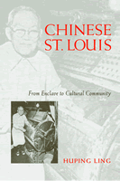

<body bgcolor="#FFFFFF" text="#000000" link="#0000FF" vlink="#CC0000" alink="#CC0000"><center><hr width="350" size="1" align="center" noshade>Forming a community around cultural heritage<hr width="350" size="1" align="center" noshade><p><a href="https://cdcshoppingcart.uchicago.edu/Cart/ChicagoBook.aspx?ISBN=9781592130382&&PRESS=temple" target="_top">Buy this book!</a> | <a href="https://cdcshoppingcart.uchicago.edu/Cart/Cart.aspx?PRESS=temple" target="_top">View Cart</a> | <a href="https://cdcshoppingcart.uchicago.edu/Cart/Cart.aspx?PRESS=temple" target="_top">Check Out</a></p><p></p></center><!--none//--><h1>Chinese St. Louis</h1>
<H2>From Enclave to Cultural Community</H2>
<h3>Huping Ling</h3>
<P>cloth 1-59213-038-0 $80.50, Sep 04, <FONT COLOR=#990033>Available</FONT>
<br>paper 1-59213-039-9 $29.95, Sep 04, <FONT COLOR=#990033>Available</FONT>
<br>Electronic Book 1-43990-581-9 $29.95 <FONT COLOR=#990033>Available</FONT>
<BR> 296 pp
6x9
10&nbsp;tables 2&nbsp;map(s) 3&nbsp;figures 18&nbsp;halftones
</P><BLOCKQUOTE><I>"Huping Ling's study of Chinese St. Louis is a breakthrough volume, the first full-scale study of the ethnic group in a midwestern American city. Only by examining the evolution of such smaller communities can the full scope of the Chinese diaspora in America be understood."</i>
<br>&#151<b>Roger Daniels</b>, Charles Phelps Taft Emeritus Professor of History, University of Cincinnati<i></I></BLOCKQUOTE>
<p><i>Chinese St. Louis</i> offers the first empirical study of a Midwestern Chinese American community from its nineteenth-century origins to the present. As in many cities, Chinese newcomers were soon segregated in an enclave; in St. Louis the enclave was called "Hop Alley." Huping Ling shows how, over time, the community grew and dispersed until it was no longer marked by physical boundaries. She argues that the St. Louis experience departs from the standard models of Chinese settlement in urban areas, which are based on studies of coastal cities. Developing the concept of a cultural community, Ling shows how Chinese Americans in St. Louis have formed and maintained cultural institutions and organizations for social and political purposes throughout the city, which serve as the community's infrastructure. Thus the history of Chinese Americans in St. Louis more closely parallels that of other urban ethnic groups and offers new insight into the range of adaptation and assimilation experience in the United States.
<BR>&nbsp;<h2>Excerpt</h2><P>Excerpt available at <a href="http://www.temple.edu/tempress">www.temple.edu/tempress</a></p>
<BR>&nbsp;<h2>Reviews</h2>
<p><i>"</i>Chinese St. Louis<i> provides a much needed addition to the published literature about Chinese Americans. Ling has written a superb, nuanced book about the Chinese community that is not placed in the all-too-familiar locations of California or New York. She skillfully examines the Chinese in St. Louis with an awareness of urban history and Chinese American historiography. This is a wonderful book, rich with insight and sophistication, and Ling shows that she is a resourceful and careful historian."</i>
<br>&#151<b>Franklin Ng</b>, California State University, Fresno
<p><i>"The importance of her study is her contribution to the understanding of the transition of Chinatowns from a residential community (ghetto) to a cultural community or an economic-social center (which accurately describes a phenomenon that has occurred after 1970 in many smaller urban centers)."</i>
<br>&#151<b>Sue Fawn Chung</b>, University of Nevada at Las Vegas
<p><i>"</i>Chinese St. Louis<i> is a solid work of historical study. The scope and depth of Ling's research is remarkable. This comprehensive account of the evolution of the Chinese American community in St. Louis will be a valuable addition to the literature on Chinese American history."</i>
<br>&#151<b>Renqiu Yu</b>, Purchase College, State University of New York
<p><i>"The book is a literary chop-suey of local Asian and American stories and the people who made them fascinating."</i>
<br>&#151<b><i>The St. Louis Post-Dispatch</i></b>
<p><i>"People who are interested in the history of St. Louis, or the history of Chinese Americans, or even those who want to read an account of the culture they came from, will find this an excellent read indeed."</i>
<br>&#151<b><i>West End Word</i></b>
<p><i>"[A] rewarding read, partly for the nuanced presentation of the Chinese presence in one specific locale, but partly also as insight to varieties of immigrant issues and presences across the United States."</i>
<br>&#151<b><i>Missio Apostolica</i></b>
<BR>&nbsp;<h2>Contents</h2><P>
<p>Acknowledgments
<br>1. Introduction
<p><b>Part I. "Hop Alley," A Community for Survival, 1860s-1960s</b>
<br>2. Building "Hop Alley": Myth and Reality, 1860s-1930s
<br>3. Living in "Hop Alley," 1860s-1930s
<br>4. Governing "Hop Alley": On Leong Chinese Merchants and Laborers Association, 1906-1966
<br>5. Dwindling "Hop Alley," 1920s-1966
<p><b>Part II. Building a Cultural Community, 1960s-2000s</b>
<br>6. Emerging Suburban Chinese American Communities, 1960s-1980s
<br>7. Building a Cultural Community, 1960s-1980s
<br>8. Development of the Cultural Community, 1990s-2000s
<br>9. Cultural Community in Retrospect and Prospect
<p>Notes
<br>Bibliography
<br>Index
</P><BR>&nbsp;<H2>About the Author(s)</H2>
<table><tr><td valign="top"><img src="/tempress/authors/1745_au.gif" height="90" width="75"></td><td width="100%" valign="middle"><p><b>Huping Ling</b> is Professor of History at Truman State University and the author of <i>Surviving on the Gold Mountain: A History of Chinese American Women and Their Lives</i>.</P></td></tr></table>
<BR><H2>Subject Categories</H2>
<p><A HREF="/tempress/asian_amer.html" TARGET="_top">Asian American Studies</a>
<BR><A HREF="/tempress/american.html" TARGET="_top">American Studies</a>
<BR><A HREF="/tempress/urban.html" TARGET="_top">Urban Studies</a>
</p>
<p align="center"><a href="https://cdcshoppingcart.uchicago.edu/Cart/ChicagoBook.aspx?ISBN=9781592130382&&PRESS=temple" target="_top">Buy this book!</a> | <a href="https://cdcshoppingcart.uchicago.edu/Cart/Cart.aspx?PRESS=temple" target="_top">View Cart</a> | <a href="https://cdcshoppingcart.uchicago.edu/Cart/Cart.aspx?PRESS=temple" target="_top">Check Out</a></p><p><font face="Arial" size="1"><a href="copyright.html" onMouseOver="window.status='Web Copyright Policy';return true;" onMouseOut="window.status=''" title="Web Copyright Policy">&copy;</a> 2015 <a href="http://www.temple.edu" target="new" onMouseOver="window.status='Link to Temple University home page';return true;" onMouseOut="window.status=''" title="Link to Temple University home page">Temple University</a>. All Rights Reserved. http://www.temple.edu/tempress/titles/1745_reg.html</font></p>